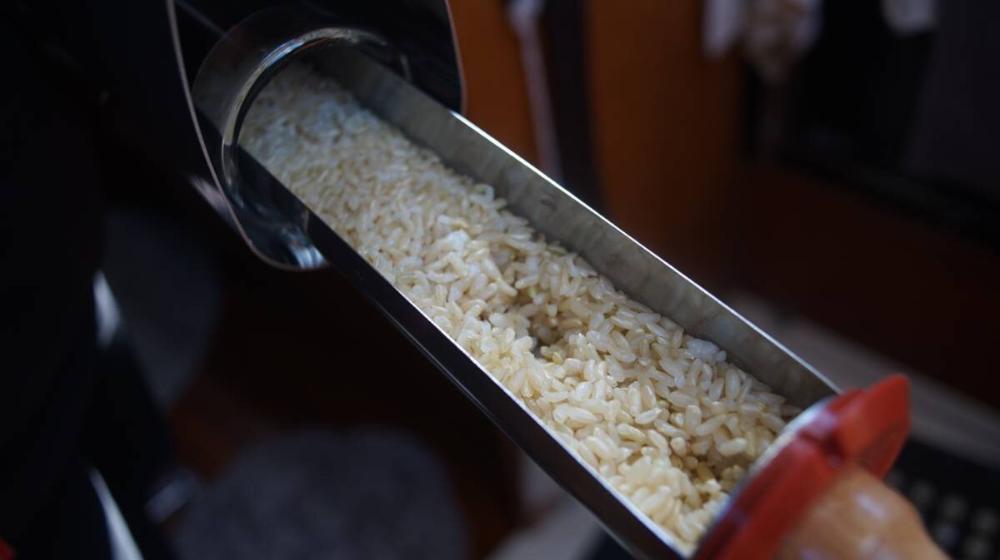

solar cooking
The sun provides inexhaustible "fuel", but requires that we follow its schedule, and position in the sky to cook food. How fast the food is cooked depends on how much sun there is that day, and what is being cooked. Beans and wholegrains will require more cooking time, while steaming veggies are done quickly.
Cooking with the sun is akin to using a slow cooker(see also insulation cooking, and can take twice as long to cook food than conventional cooking methods. This is especially true for box cookers.
Advantages:
- If there is sun, you can cook.
- It uses no fuel.
- It uses less water.
- It is smoke-free.
- It is useful in an emergency(power outages, when out of cooking fuel).
- It uses no electricity.
- Has no moving parts.
Things to remember:
- Have to follow the sun's schedule.
- Must be there to re-adjust position of stove to the sun, which may be tricky on a boat on windy days.
- It can take longer to cook certain foods, so taking food out to cook ahead of time is often necessary.
Types of solar ovens
There are many type of solar ovens available, each have their advantages and disadvantages. Not all designs used on land will make sense on a boat.
In a small space size is a factor to consider, because the oven needs to be secured while the boat is underway, and also because a gust of wind can easily knock it over when it is fully deployed and cooking on deck (parabolic solar cookers, while efficient, have too much windage).
If looking for land-friendly designs, they're all listed here.
On a boat, solar cooking options to consider include: